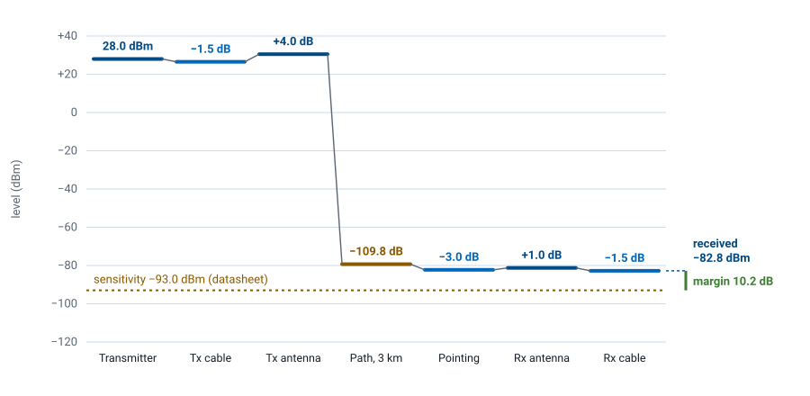
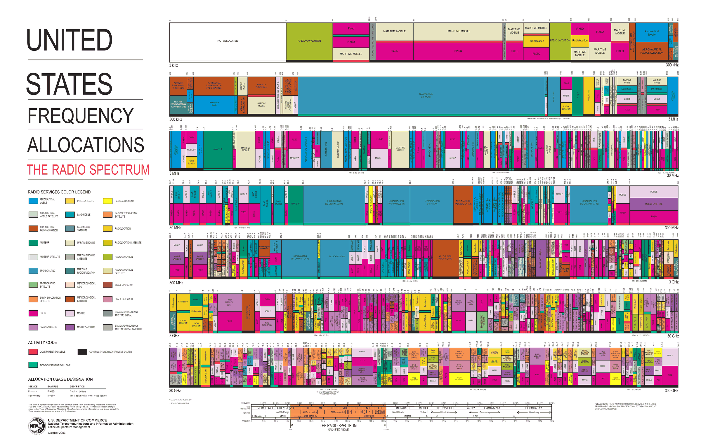
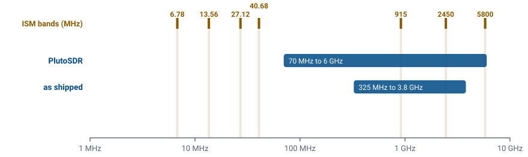
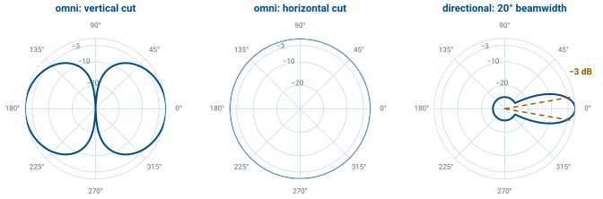
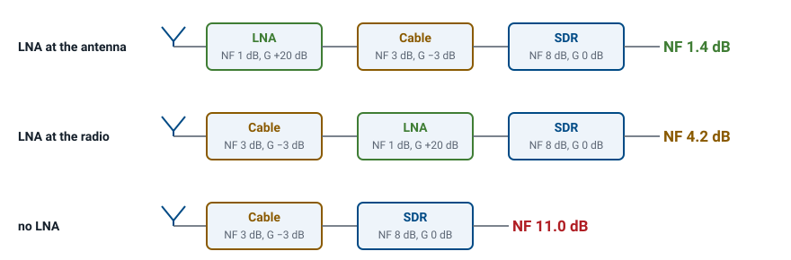
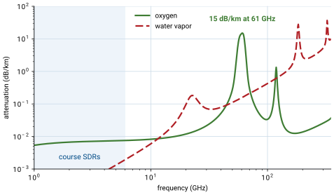

L2 - Noise Figure and Link Budget#
Noise Figure and Link Budget
A link budget adds every gain and loss between two radios and compares the result to the noise floor.
Lesson 2 · Module 1: Foundations of Detection & Link Budgets · Dr. Neil Rogers
Slides
Learning Objectives
- I can define noise figure and explain how each stage of a receiver chain, the first above all, sets the system's noise performance.
- I can compute a link budget for a specified geometry, transmitter, and antenna configuration, and compare it with the signal an SDR shows.
Will the Link Close?
A link budget follows the signal level from the transmitter to the receiver, in dB.
The link closes when the received power clears the noise floor by the SNR the modem needs.
The extra above that is the margin.

Lesson 1 introduced the radios we will use all semester. Before we build anything with them, we need a way to answer the first question of any wireless design: will the signal arrive strong enough to decode? A link budget answers it. We start with the transmitter power, add every gain and subtract every loss between the two antennas, and compare what arrives with the receiver’s noise floor. If the received power clears the floor by the signal-to-noise ratio (SNR) the demodulator needs, the link closes, and whatever is left over is the margin.
The figure is the worked example at the end of this lesson, a 2.45 GHz drone link over 3 km. The path takes almost 110 dB, far more than every other entry combined, and the signal still arrives 10.2 dB above what the receiver needs. Every number on it is something we can look up, measure, or compute, and that is the point of the method: a link budget turns “will it work?” into arithmetic we can check before we transmit.
Part 1: The Spectrum Is Allocated

Every band from 3 kHz to 300 GHz has assigned services.
Each color is one service; most bands carry several.
The chart shows every allocation in the United States, from 3 kHz at the top left to 300 GHz at the bottom right, with each colored block a service such as broadcasting, mobile, aeronautical navigation, or radar. The version here is the 2003 edition; the current edition and its legend are on the NTIA allocation chart page. Two things stand out. Almost no band is empty, and most bands are shared by several services. That density is why so much of this course is about finding, identifying, and separating signals rather than generating them.
Who May Transmit Where
The FCC and NTIA allocate every band; most require a license.
The ISM bands (915 MHz, 2.4 GHz, 5.8 GHz) allow low-power unlicensed use, which is why Wi-Fi, Bluetooth, and most drones live there.
Receiving is unrestricted; transmitting is not.

In the United States the FCC (and the NTIA, for federal users) allocates the radio spectrum, and the allocation chart shows who holds each band. Almost all of it requires a license to transmit. The exceptions that matter most in this course are the industrial, scientific, and medical (ISM) bands. Part 15 of the FCC rules lets anyone transmit there at low power without a license, provided they accept interference from everyone else, and that is why Wi-Fi, Bluetooth, garage-door openers, and most hobby drones share 915 MHz, 2.4 GHz, and 5.8 GHz.
Two rules govern what we do with the SDRs. Receiving is unrestricted: we can tune anywhere the hardware reaches and look at whatever is there, which is most of this course. Transmitting is not: in class we transmit only into a cable, into a shielded enclosure, or at very low power in an ISM band, and only when the lesson says to. The figure shows where the ISM bands fall against the tuning range of each course SDR. The RTL-SDR receives only, and it reaches 915 MHz but not 2.4 GHz; the PlutoSDR and the HackRF cover all three of the common ISM bands.
Part 2: The Friis Equation
Check line of sight first.
Then power, antenna gains, wavelength, and distance set the received power.
Every wireless link depends on the same few factors, and the first one to check is line of sight: if the path is blocked by terrain, buildings, or the curve of the Earth, nothing else in the budget matters. With a clear path, four things set how much power arrives: the power transmitted, the gains of the two antennas, the wavelength, and the distance.
The Friis transmission equation puts them together. \(P_r\) is the power the receiving antenna collects and \(P_t\) the power the transmitter delivers to its antenna, both in watts. \(G_t\) and \(G_r\) are the antenna gains, \(\lambda\) is the wavelength, and \(R\) is the distance between the antennas. The \((4\pi R)^2\) is the power spreading over a growing sphere. The \(\lambda^2\) appears because an antenna of fixed gain has an effective receiving area proportional to \(\lambda^2\), so the same antenna collects less power at a higher frequency. That is spreading, not absorption: free space absorbs nothing.
Decibels
Parameter |
Linear |
dB |
|---|---|---|
\(P_t\) |
120 W |
\(50.8\) dBm |
\(G_t\) |
1201.2 |
\(30.8\) dB |
\(G_r\) |
281.5 |
\(24.5\) dB |
Products become sums in dB; \(\times 2\) is \(+3\) dB.
dBm is relative to 1 mW; dBi, to an isotropic antenna.
A link budget multiplies a long chain of gains and losses, and the numbers span many orders of magnitude: a transmitter puts out watts, and a receiver collects picowatts. Decibels turn those products into sums and keep the numbers readable. A power ratio in decibels is \(10\log_{10}(P_2/P_1)\), so a factor of two is 3 dB and a factor of ten is 10 dB.
An absolute power takes a reference: dBm is power relative to 1 mW, so 120 W is \(10\log_{10}(120{,}000) = 50.8\) dBm, and 1 W is \(+30\) dBm. dBi is antenna gain relative to an isotropic antenna, one that radiates equally in every direction. The table converts the system in the Friis example on the next slide; with every quantity in dB, the received power is the transmitter power plus the gains minus the losses.
Friis in Decibels
\(L_p\) is the free-space path loss in dB.
Taking \(10\log_{10}\) of both sides of the Friis equation turns the product into the sum on the slide, with the wavelength and distance factor collected into the free-space path loss \(L_p\). Writing \(\lambda = c/f\) with the frequency in hertz and the distance in meters collects every constant into the \(-147.55\) dB term, \(20\log_{10}(4\pi/c)\), which is the form to use with a calculator.
For the system in the table, at 3.7 GHz over 80 km, the path loss is \(191.4 + 98.1 - 147.55 = 141.9\) dB. The received power is then \(50.8 + 30.8 + 24.5 - 141.9 = -35.8\) dBm. Every link budget in this course is this sum, with more terms for the losses a real link adds.
Path Loss Rules of Thumb
Doubling the distance or the frequency adds 6 dB of path loss.
3 km at |
Path loss |
|---|---|
915 MHz |
101.2 dB |
2.45 GHz |
109.8 dB |
5.8 GHz |
117.3 dB |
Path loss grows as \(20\log_{10} R\), so every doubling of distance adds 6 dB, and every factor of ten adds 20 dB. The frequency term behaves the same way with fixed-gain antennas. That is why a 915 MHz telemetry radio outranges a 2.4 GHz radio at the same power and antenna gain: at 3 km the 915 MHz link loses 8.6 dB less.
Part 3: Antennas

Gain is directivity times efficiency, in dBi.
At the half-power beamwidth edge the gain is 3 dB lower.
Orientation matters: a banking drone points its beam away.
An antenna turns the voltages and currents in a circuit into a radiated wave, and back again, and it comes in many forms: wire dipoles, horns, parabolic dishes, slotted waveguides, and phased arrays. A good one does two jobs: it sends energy in the directions we want and suppresses it elsewhere, and it moves as much power as possible between the circuit and space. Directivity measures the first, how much stronger the radiation is in the best direction than on average. Gain is directivity times efficiency, quoted in dBi against an isotropic antenna, and it is the number that goes in the Friis equation.
The figure shows the two kinds the course uses. An omnidirectional antenna, like the whip on an SDR, radiates equally in every horizontal direction but not straight up or down. A directional antenna puts its gain into one beam. The gain on a datasheet is the peak, along that beam, and the beamwidth is the angle between the points where the pattern falls 3 dB below the peak. A drone that banks, a handheld radio held sideways, or two linear antennas at right angles to each other can each lose several dB, so a budget either assumes the worst orientation or states the one it assumes. Every cable, connector, and filter between the radio and its antenna also subtracts its insertion loss; a few meters of thin coax at 2.4 GHz loses a dB or more.
Part 4: SNR and Noise Figure
Every stage lowers the SNR; NF says by how many dB.
Typical receivers: 2 to 8 dB.
The signal-to-noise ratio (SNR) is the signal power over the noise power, and it is the one noise number this course uses. It decides whether a receiver can decode: Lesson 3 shows what a digital signal looks like as the SNR falls, and every lab after that turns a noise slider and watches.
Every stage of a receiver adds a little noise of its own, so the SNR always gets worse on the way through. The noise figure NF says by how much, in dB: it is the SNR at a stage’s input over the SNR at its output. A perfect, noiseless stage has NF \(= 0\) dB, and typical receivers fall between 2 and 8 dB. Two cases are worth knowing. A passive loss at room temperature, a cable or a filter, has a noise figure equal to its loss: 3 dB of coax lowers the SNR by 3 dB. A low-noise amplifier (LNA) is built to add as little noise as possible while it raises the signal, and a good one is near 1 dB. A general-purpose SDR front end trades noise performance for frequency coverage and usually lands at several dB.
Cascaded Noise Figure

A receiver is a chain of stages, and the formula on the slide combines their noise factors \(F_n\), the noise figures as linear ratios, and their linear gains \(G_n\) into the noise factor of the whole chain. Each stage after the first contributes its extra noise divided by all of the gain ahead of it, so behind a 20 dB LNA a stage’s noise counts one hundred times less than it would at the antenna. The first stage sets the floor, so it should have a low noise figure and enough gain to make everything after it unimportant.
The figure shows what that means in practice. The same three parts, an LNA with NF 1 dB and 20 dB of gain, 3 dB of coax, and an SDR with NF 8 dB, give a system noise figure of 1.4 dB with the LNA at the antenna, 4.2 dB with the cable ahead of the LNA, and 11.0 dB with no LNA at all. Any loss in front of the first amplifier adds to the noise figure dB for dB, because nothing ahead of it divides it down, which is why the LNA belongs at the antenna.
Noise Sources and the Noise Floor
Thermal noise, \(kTB\) at 290 K, is \(-174\) dBm in each hertz.
1 MHz with NF 7 dB gives \(-107.0\) dBm.
Where does the noise come from? Electrons moving at random in every resistor produce thermal noise, a noise power \(kTB\) in a bandwidth \(B\), where \(k = 1.38\times10^{-23}\) J/K is Boltzmann’s constant and \(T\) is the temperature. At the standard 290 K that is \(-174\) dBm in each hertz, the number to remember. Shot noise, from current flowing through semiconductor junctions, and smaller sources such as generation-recombination, temperature-fluctuation, and quantum noise add to it; a receiver lumps them all into one noise temperature, the \(T\) that would give the same \(kTB\).
The noise a receiver sees grows with the bandwidth it lets through, and its own noise figure adds on top, so its noise floor in dBm is the sum on the slide. For example, 1 MHz of bandwidth and a 7 dB noise figure put the floor at \(-174 + 60 + 7 = -107.0\) dBm. Narrowing the bandwidth lowers the floor, 3 dB for every halving, which is one reason narrowband signals such as CW reach so far.
The Atmosphere

Below about 10 GHz the clear atmosphere adds little.
Oxygen absorbs strongly near 60 GHz; water vapor, near 22 and 183 GHz.
Free space absorbs nothing, but the atmosphere does, and how much depends on frequency. The chart is the clear-air absorption at sea level from the ITU-R model. Below 6 GHz, which covers every band our SDRs reach, the clear atmosphere is nearly transparent: less than 0.01 dB/km. Above that, water vapor adds loss, and near 60 GHz oxygen absorbs about 15 dB/km. Rain, foliage, walls, and people in the path add loss at any frequency, and an indoor Wi-Fi budget can lose 10 dB or more through a couple of walls. These losses are hard to predict exactly, which is one reason a link budget carries margin.
Part 5: SNR and Margin
\(P_\text{sens}\) is the datasheet sensitivity.
Design for about 10 dB of margin.
The received SNR is the received power minus the noise floor, both in dBm. Every receiver needs some minimum SNR to decode reliably, and that sets its sensitivity, the weakest signal it can use, which radio datasheets quote directly in dBm. The margin is how far the received power sits above the sensitivity.
A link with 0 dB of margin works only on a good day. Fading, a bad antenna angle, a wet radome, or a warmer receiver all take a few dB at unpredictable times, so a typical design goal is about 10 dB of margin.
Worked Example: A Drone Link
Step |
Result |
|---|---|
EIRP |
\(30.5\) dBm |
Path loss, 3 km |
\(109.8\) dB |
Received |
\(-82.8\) dBm |
Sensitivity |
\(-93\) dBm |
Margin |
\(10.2\) dB |
Goal: at least 10 dB of margin.
Worked example — a 2.45 GHz drone link
From the 2025 slides. The goal is at least 10 dB of margin.
Parameter |
Value |
|---|---|
\(P_t\) |
630 mW |
\(P_{rx,\text{min}}\) (sensitivity) |
\(-93\) dBm |
\(G_{tx}\) |
4 dBi |
\(G_{rx}\) |
1 dBi |
\(f\) |
2.45 GHz |
\(R_\text{max}\) |
3 km |
Max bank angle (HPBW) |
\(20^\circ\) |
Insertion loss (radio to antenna) |
1.5 dB each side |
The 20° is the drone antenna’s half-power beamwidth, and the bank is limited so the ground station stays at its edge, which costs 3 dB.
Quantity |
Work |
Result |
|---|---|---|
Transmit power |
\(10\log_{10}(630)\) |
\(28.0\) dBm |
EIRP |
\(28.0 - 1.5 + 4.0\) |
\(30.5\) dBm |
Path loss |
\(20\log_{10}(2.45\times10^9) + 20\log_{10}3000 - 147.55\) |
\(109.8\) dB |
Received |
\(30.5 - 109.8 - 3.0 + 1.0 - 1.5\) |
\(-82.8\) dBm |
Margin |
\(-82.8 - (-93)\) |
\(10.2\) dB |
The link meets the 10 dB goal. The effective isotropic radiated power, EIRP, is the transmit power plus the antenna gain minus the transmit-side losses, the power an isotropic antenna would need to produce the same signal along the beam; regulators limit it in the ISM bands.
Link Budget Explorer
The widget starts on the drone link above. The four steps are the transmitter, the level after the transmit antenna, the level after the path, and the receiver input after the remaining losses; the dashed red line is the noise floor and the dotted line is the sensitivity. The widget builds the sensitivity from a bandwidth, a noise figure, and a required SNR; the drone preset is set to match the datasheet’s \(-93\) dBm. Drag the distance to 6 km and watch the margin drop by 6.0 dB. Raise the bandwidth to 20 MHz and watch the floor rise by 13 dB, so a wideband link loses range for the same power. Then try the two other presets. The Wi-Fi link loses 10 dB to walls and needs 25 dB of SNR for a fast modulation, so it has little margin even at 50 m. The GPS link arrives about 18 dB below the noise floor; a GPS receiver still works because it correlates the signal against a code it already knows, which pulls the signal back out of the noise.
Reading SNR on an SDR
Open an FM capture in SDR Flex; read the peak and the floor.
Live in GQRX: 99.9 MHz, WFM, AGC off, RF gain 30 dB.
FFT Settings → FFT size 4096 → 8192.
This is an instructor demo, with background from PySDR’s Noise and dB chapter; cadets repeat it in GNU Radio’s frequency sink once the Lesson 5 install is done. Start in SDR Flex, in the browser: right-click the source chip, open one of its example FM captures, and read the level of a station’s peak and of the floor beside it. Then go live with an RTL-SDR in GQRX, the fallback, since SDR Flex in the browser has no live radio:
Device: the RTL-SDR. Frequency 99.9 MHz (or any local station), mode WFM, AGC off, RF gain 30 dB.
Read the station’s peak and the floor beside it, in dBFS. The difference is the SNR. Tune a weak station and compare.
FFT Settings → FFT size from 4096 to 8192. The floor drops 3 dB.
The vertical axis is in dBFS, decibels relative to the full scale of the analog-to-digital converter, not in dBm. Turning dBFS into dBm takes a calibration against a known source, but an SNR does not need one: it is the difference between two levels on the same axis. In step 3 each FFT bin gets half as wide and holds half the noise, so the floor drops 3 dB. A 200 kHz FM station spans many bins, so its level drops 3 dB too and the displayed SNR stays the same; a narrow carrier, all in one bin, would stay where it was and its SNR would rise.
Key Point
A link closes when the received power clears the noise floor by the SNR the receiver needs. Path loss sets the size of the problem, and the first stage of the receiver sets the floor.
Sources
This lesson follows Dr. Rogers’s 2025 slides, Link Budget, for its topics, order, and worked examples. Background reading:
PySDR, Noise and dB: decibels, noise power, and SNR.
PySDR, Link Budgets: path loss, noise figure, and an end-to-end budget.
The hands-on step, reading SNR off a spectrum display, is an instructor demo in SDR Flex and then GQRX with an RTL-SDR, repeated in GNU Radio from Lesson 5.
Summary
Idea |
What it is |
Number to remember |
|---|---|---|
Friis |
\(P_r = P_t + G_t + G_r - L_p\) |
check line of sight first |
Path loss |
\(20\log_{10}f + 20\log_{10}R - 147.55\) |
\(+6\) dB per doubling of \(R\) or \(f\) |
Antenna gain |
directivity \(\times\) efficiency, in dBi |
3 dB down at the beamwidth edge |
Noise figure |
\(\text{SNR}_\text{in}/\text{SNR}_\text{out}\) in dB |
LNA about 1 dB; passive loss NF \(=\) loss |
Cascade |
\(F_1 + (F_2 - 1)/G_1 + \cdots\) |
the first stage dominates |
Thermal noise |
\(kTB\) at 290 K |
\(-174\) dBm/Hz |
Noise floor |
\(-174 + 10\log_{10}B + \text{NF}\) |
\(-114\) dBm in 1 MHz before NF |
Sensitivity |
floor \(+\) required SNR |
from the radio’s datasheet |
Margin |
received \(-\) sensitivity |
design for about 10 dB |
Practice
Looking Ahead
Lesson 3 shows what a digital signal looks like as the SNR falls.
Lesson 4 opens the SDR and its front end, where the noise figure is set.
Today we took the receiver’s sensitivity from its datasheet, the \(-93\) dBm in the drone example, and that number rests on the SNR the receiver needs. Lesson 3 shows what that SNR protects. A digital modulation places its symbols at points, and the noise floor we computed today spreads each received symbol into a cloud around its point. Turn the noise up and the clouds grow until samples land in a neighbor’s region; the SNR a radio needs is whatever keeps that from happening too often.
Lesson 4 then opens the SDRs themselves: the RF front end, the mixer and filters, and the analog-to-digital converter, which together set the noise figure, the bandwidth, and the dynamic range we used in today’s budget. Before the next lesson, be able to compute a free-space path loss and a noise floor to within a dB, since every lab in this course starts by checking that the signal is there on the display.